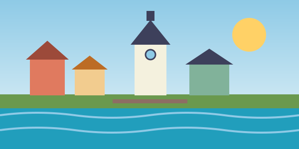

Tere! See leht räägib Tartust, linnast, kus ma praegu õpin ja elan.

Miks Tartu?
Tartu on väike ja mugav tudengilinn. Kõik olulised kohad on jalgsi või jalgrattaga kättesaadavad, ülikool asub kesklinnas ning ümberringi on palju parke ja kohvikuid.
Siin on lihtne leida uusi sõpru, liituda tudengiorganisatsioonidega ja veeta aega Emajõe kaldal.
Minu lemmikkohad
| Koht | Liik | Miks meeldib |
|---|---|---|
| Toomemägi | Park | Rahulik, sobib õppimiseks |
| Raekoja plats | Väljak | Linna süda |
| Emajõe promenaad | Jalutusrada | Ilus vaade veele |
| Raamatukogu | Õppekoht | Vaikne ja avar |